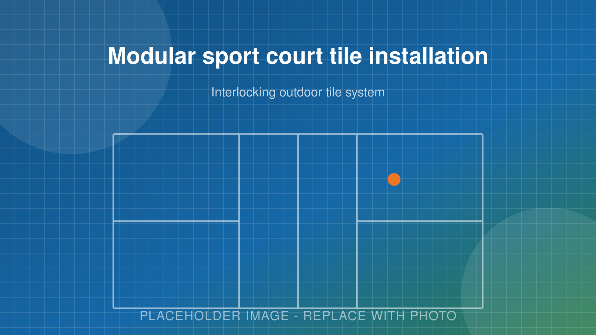
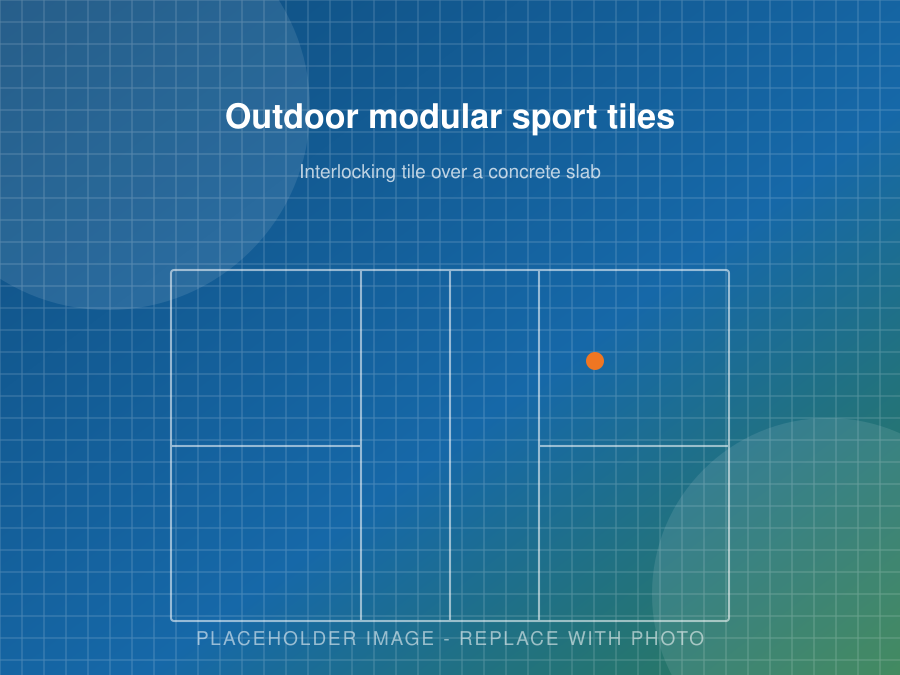

Modular Surfaces
Sport Court Tile Installation
Interlocking modular tile for outdoor and indoor courts. Drains through, easy on the joints, fast to install, and a single damaged tile is simple to replace.
- Outdoor and indoor tile systems
- Multi-sport court layouts
- Installs over sound existing slabs
- Temporary and relocatable courts
Get Free Quote Call (705) 242-8236
Free estimates · Locally focused service · Clear, written quotes
Modular Surfaces
Sport Court Tile Installation
Modular sport tile is an interlocking plastic surface that clips together over a flat base. Instead of coating a slab, you build the playing surface out of thousands of individual tiles.
It has real advantages. Water drains straight through so the court is playable sooner after rain. The open structure flexes, which takes load off knees and ankles. And if a tile gets damaged, you swap that tile instead of resurfacing the court.
We install tile for outdoor courts, indoor conversions, multi-sport pads and temporary setups across Peterborough and the Kawarthas.

Comparison
Tile vs. Acrylic: An Honest Comparison
We install both. Here is how they actually differ so you can choose on facts rather than on whatever a supplier is pushing.
| Factor | Modular tile | Acrylic coating |
|---|---|---|
| Drainage | Drains through the surface, playable quickly after rain | Sheds across the surface, needs correct slope |
| Install time | Fast once the base is ready, often a day or two | Several days of coats plus drying between them |
| Joint comfort | Built-in flex, easier on knees and ankles | Firm unless you add a cushioned system |
| Ball bounce | Consistent, plays slightly differently | The reference standard for true bounce |
| Repairs | Replace individual tiles | Patch and recoat an area or the whole court |
| Material cost | Higher up front | Lower up front |
| Surface temperature | Runs cooler, air moves through | Darker colours get hot in direct sun |
| Look | Visible seams, colour blocks | Seamless, smooth, traditional court look |
| Multi-sport | Excellent, lines built into the tile layout | Good, lines painted on |
| Reusable | Can be lifted and reinstalled | Permanent |
Applications
Where Tile Makes the Most Sense
-
Outdoor courts
Tile suits outdoor courts in this climate well. Water passes through rather than pooling, and the open structure handles freeze-thaw movement without the cracking you see in a rigid coating. A properly built slab underneath is still essential.
-
Indoor courts
The fastest way to turn a gym, barn, warehouse bay or oversized garage into a playable court. Tile lays over the existing floor with minimal preparation and can come back up if the space changes use.
-
Multi-sport pads
This is where tile really shines. Different tile colours mark out pickleball, basketball, volleyball and ball hockey layouts on the same pad without a confusing mess of painted lines.
-
Temporary and event courts
Tile can be installed for a season, a tournament or a leased property, then lifted and relocated. Useful for clubs testing demand before committing to permanent construction.
Drainage
How Tile Handles Water
This is the practical advantage people notice first. On an acrylic court, rain has to run across the surface to the low edge. On a tile court, it drops straight through the tile and runs off along the base underneath.
What that means day to day:
- You can play sooner after a shower, often within minutes
- No puddles sitting in low spots and slowly degrading the surface
- Less risk of ice forming and lifting the surface in a freeze-thaw cycle
- Snow melt drains away instead of pooling on top in spring
The base still has to drain
Tile moves water off the playing surface. It does not move water off your property. The slab or compacted base underneath still needs correct slope and a place for that water to go, or it will simply sit under the tile instead of on top of it.
Installation
How We Install a Tile Court
Base assessment
We check whether your existing slab is flat, sound and draining. Tile hides small imperfections but not a failing base.
Base preparation
New slab, asphalt or compacted stone base as required, built to the same standards as any court we pour.
Layout
The court is set out precisely so lines land correctly and the tile pattern is square to the pad.
Tile installation
Tiles clip together working out from the layout lines. Most courts go down in a day or two once the base is ready.
Trimming and edging
Perimeter tiles are cut to fit and edge pieces are fitted so there is no trip hazard at the boundary.
Anchoring and finishing
The field is anchored as the system requires, then net posts, accessories and any fencing are installed.
Thermal movement
Plastic tile expands and contracts with temperature, typically a couple of inches across a full court between a January morning and a July afternoon. We allow for that at the perimeter during layout. A tile court installed tight to a wall or curb will buckle.
Care
Looking After a Tile Court
Tile is low maintenance, which is a large part of the appeal.
- Sweep or blow off leaves and grit so debris does not collect in the openings
- Rinse with a hose. A low pressure wash once or twice a year is plenty
- Check the perimeter and anchoring each spring after the ground has settled
- Replace individual damaged tiles as needed rather than resurfacing
- Use a plastic shovel or a brush for snow, never a metal blade
Comparing options for a new build? Our residential court page covers acrylic surfacing in detail, and our maintenance page covers year-round care for both surface types.
Compare Your Options
Not Sure Whether You Want Tile or Acrylic?
Tell us how the court will be used and where it is going. We install both, so we have no reason to steer you toward one over the other.
Questions
Frequently Asked Questions
Do sport court tiles still need a concrete base?
They need a flat, stable, well-drained base. Concrete is the most common and the best long-term choice. Asphalt works. A properly prepared and compacted crushed stone base works for some systems.
What tiles cannot fix is a base that heaves or holds water. The surface below still has to be right.
Are tiles better than acrylic?
Neither is better in every situation. Tile drains through, installs fast, absorbs shock well and lets you replace one damaged piece. Acrylic gives a truer bounce, a seamless look and a lower material cost.
For a dedicated outdoor pickleball court we usually recommend acrylic. For multi-sport, indoor conversions or projects that need a fast turnaround, tile often wins.
How long do sport court tiles last?
Quality outdoor tile systems are made from UV-stabilised polypropylene and carry long warranties, often decades. They handle freeze-thaw well because the open structure lets water pass through instead of trapping it.
Can tiles be installed over an existing court?
Yes, and it is one of the best uses for them. If you have a sound but tired slab, tile can go straight over top without stripping the old coating, as long as the surface is flat and drains.
Do tiles get hot in summer?
Less than dark acrylic does. Air moves under and through the tile, and lighter tile colours reflect more heat. It is one of the practical advantages on a south-facing court.
Can I take a tile court with me if I move?
In principle yes, which is part of the appeal for temporary or leased sites. Tiles unclip and can be lifted, stored and reinstalled. Whether it is worth the labour depends on the size of the court.
How is the ball bounce on tile?
Good. Modern pickleball-specific tile is designed for consistent bounce. It plays slightly differently from acrylic, and some competitive players prefer acrylic for that reason, but most recreational players find no issue at all.
Can tiles be used indoors?
Yes. Indoor tile systems are a common way to convert a gym, barn, warehouse bay or large garage into a playable court without pouring a new floor.
Service Area
Where We Build Pickleball Courts
We are based in Peterborough and most of our work is within about an hour of the city. If your property is not on the list below, call anyway. We travel for the right project.
- Peterborough
- Lakefield
- Bridgenorth
- Ennismore
- Selwyn
- Douro-Dummer
- Norwood
- Havelock
- Millbrook
- Keene
- Warsaw
- Buckhorn
- Cavan Monaghan
- Otonabee-South Monaghan
- Bailieboro
- Curve Lake
- Lindsay
- Kawartha Lakes
- Bobcaygeon
- Omemee
- Cobourg
- Port Hope
- Campbellford
- Hastings
- Apsley
- Young's Point
Peterborough & Selwyn Township
Peterborough, Lakefield, Bridgenorth, Ennismore, Young’s Point and Curve Lake. These are our closest jobs and usually our fastest scheduling. Lots north of the city often have room for a full 30 by 60 foot court with space to spare.
East & North of the City
Douro-Dummer, Warsaw, Norwood, Havelock, Apsley and Buckhorn. Rural acreage and waterfront properties here suit a court well, though soil and drainage conditions change a lot from lot to lot.
South & West
Millbrook, Cavan Monaghan, Keene, Bailieboro, Otonabee-South Monaghan, Omemee, Lindsay, Bobcaygeon and the wider City of Kawartha Lakes.
Northumberland & Beyond
Cobourg, Port Hope, Campbellford and Hastings. We take on work in these areas regularly, especially commercial builds and court resurfacing.
Free Estimate
Get a Sport Court Tile Quote
Tell us about your project. We’ll get back to you with next steps and a time for a site visit.
- No cost, no pressure site visit
- Clear written quote with the work itemized
- Straight answers about what your site actually needs
- Serving Peterborough and the surrounding townships